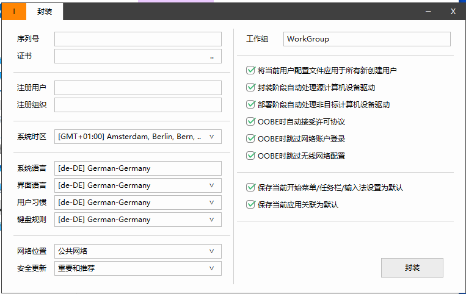
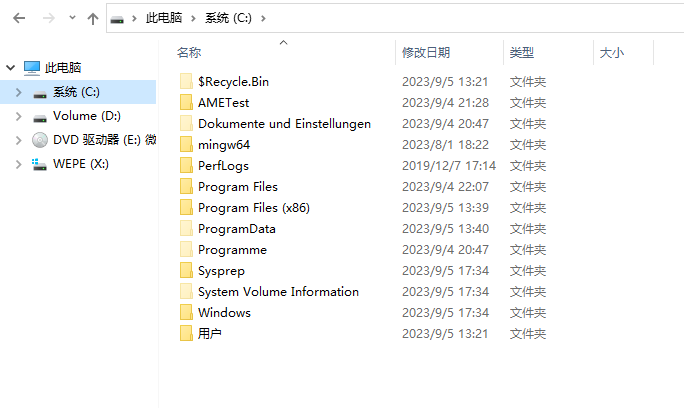
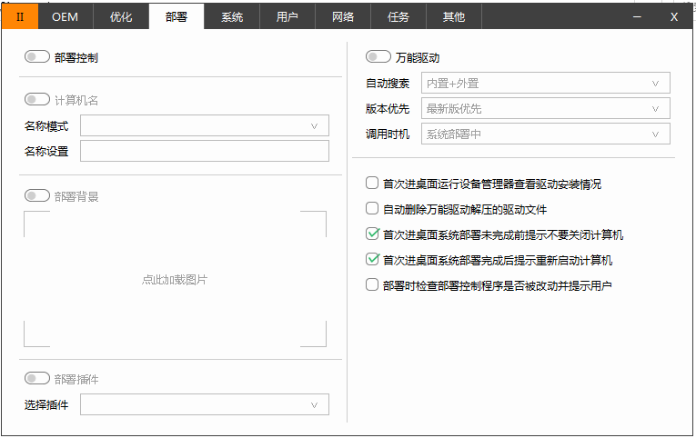
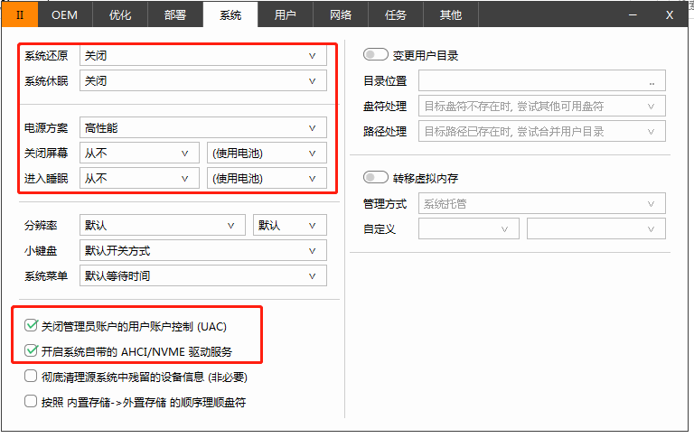
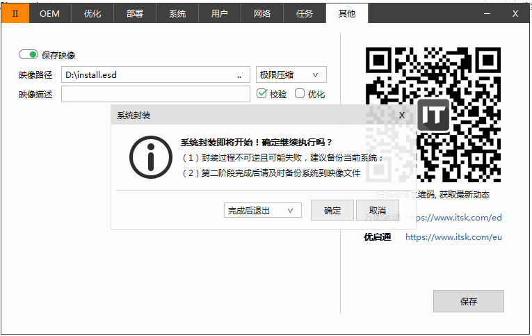
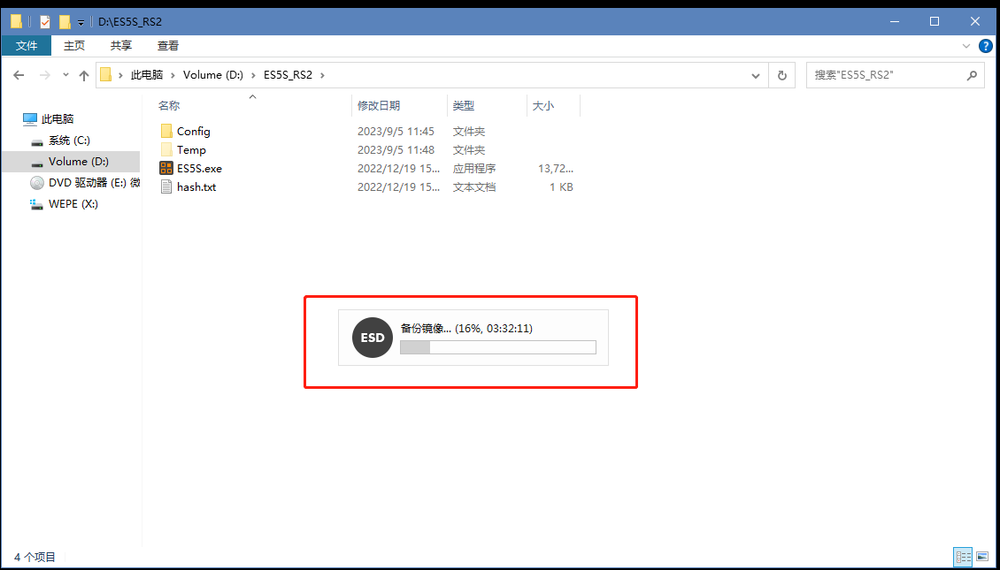

封装自定义Windows 安装镜像
因为公司的电脑有时需要重装系统，需要一同重装的还有许多专业软件。如果手工安装的话费时费力。于是想着能封装一个安装包，可以自动部署系统和软件，考虑过Ghost，但是出于各种原因不敢使用。于是参考制作企业批量安装的WIN10封装镜像一文，记录下自己的一些实践。
全部的安装过程都是在虚拟机中进行，这里依然选择VMware。
准备工作
- 下载win10 media creation tool，并用该工具制作ISO 镜像；
- 下载WEPE，并生成一个WEPE 的ISO 镜像；
- 创建VMWare 虚拟机，设置硬盘不小于100 GB，也可以视需要添加第二块硬盘，至少要保证在虚拟机系统里有两个分区。并添加DVD 驱动器，依次挂载
WEPE.iso和Windows.iso； - 没有必要选择从
bios引导，但是UEFI要求硬盘分区是GPT格式； - 进入
WEPE，通过DiskGenius快速创建分区，选择GPT并选择创建ESP和MSR分区； - 下载Easy Sysprep 5S RS2 备用；
安装系统
- 通过
WEPE中的CGI 安装系统到刚创建好的主分区。选择映像文件是Windows.iso --> sources --> install.[wim|esd]； - 安装完重启并进入系统（可以提前断开所有的DVD 驱动器），在选择国家和地区时，按
ctrl+shift+f3重启进入封装模式，并且有管理员权限； - 进入系统准备模式会有
系统准备工具的提示，选择取消就好了； - 设置组策略：
计算机配置--Windows 设置--安全设置--本地策略--安全选项--（禁用）用户账户控制：以管理员模式批准运行所有管理员，以防止某些软件无法运行。家庭版用户还要提前开始超级管理员的帐号；
封装系统
- 安装所需的软件到
C:\盘，一般软件都是默认安装到系统盘的； - 拷贝Easy Sysprep 5S RS2 到
D:\并执行第一次封装（设置如下）。虚拟机里面可能无法使用U 盘和共享文件夹，但是可以使用浏览器和网络共享用来传输文件；
 - 第一次封装完成后关机，并挂载
WEPE.iso，启动虚拟机进入WEPE。虚拟机--电源--启动时进入固件可以方便的选择引导设备 - 在
WEPE中删除系统盘中的无关文件，只保留如下文件夹：
 - 再次打开
D:\...\ES5S.exe，执行第二次封装，根据需要进行定制，这里我除系统和部署做了设置之外，其他选项全部关闭。（UAC 还是不关闭比较好）： 
 - 保存文件：

第二次封装可能需要等待十几秒或者几十秒之后才会开始，并且这个过程会比较漫长，具体执行时间视机器性能和系统大小决定，尽量给虚拟机的CPU分配的好一些：

重新打包
封装完成后想办法把install.[wim|esd] 拷贝出虚拟机，然后替换掉Windows.iso -- sources 中的同名文件：
- 可以使用
UtralISO工具完成； - 也可以通过解压
Windows.iso到U盘完成（我选择这一种，因为可以用WEPE制作启动U盘，刚好剩余的空间用来放镜像就好了）
部署安装
在裸机上，通过WEPE 的启动U盘中的CGI 安装部署系统，完成后重启电脑设置用户。完事儿会自动安装设备和驱动程序，这个过程可能需要一二十分钟吧，但是好在基本上不需要管。之前安装的软件也都可以用。
唯一的缺点就是如果软件比较大，制作过程就会比较长，并且镜像体积会比较大。但这也是没办法的事。